U6 · NIELIT CoE internship · Chip design
32-bit ALU — RTL to GDSII
A complete open-source ASIC flow for a 32-bit arithmetic logic unit: 29 operations, a Brent–Kung parallel prefix adder, 7,372 standard cells placed and 8,135 nets routed with zero DRC violations on 0.18 µm.
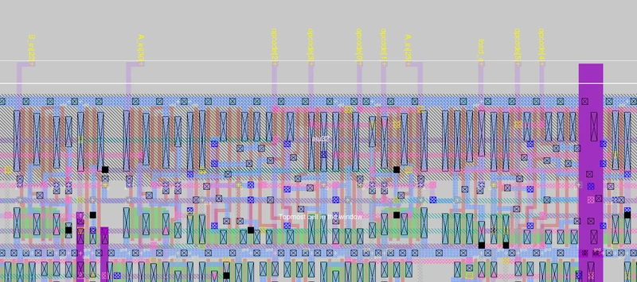
What I built
A 32-bit ALU taken all the way from Verilog to a fabrication-ready GDSII during an internship at NIELIT's Centre of Excellence in Chip Design — using only open-source tools: Yosys, GrayWolf, Qrouter and Magic.
It does 29 operations: signed and unsigned add, subtract, multiply and divide, all sixteen boolean functions, and three shift types.
The design decisions
Arithmetic speed comes from a Brent–Kung parallel prefix adder, which trades wiring for a carry path that grows logarithmically rather than linearly. It ends up being the critical path of the whole design.
Multiply and divide run as sequential state machines over 32 cycles instead of combinational arrays — a deliberate area-for-latency trade, since a full 32-bit combinational multiplier would have dominated the cell count for operations that aren't on the hot path.
How it came out
7,372 standard cells, a 5.24 ns critical path for about 190 MHz, and 8,135 nets routed with zero DRC violations on 0.18 µm. Verification passed 66 of 66 randomised tests across three seeds.
Mostly it's an argument that the open-source flow is mature enough for real digital blocks, not just teaching examples.
Gallery
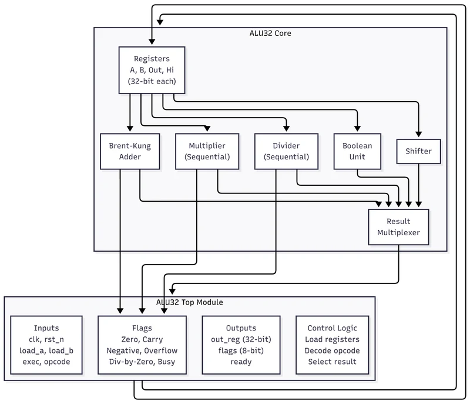
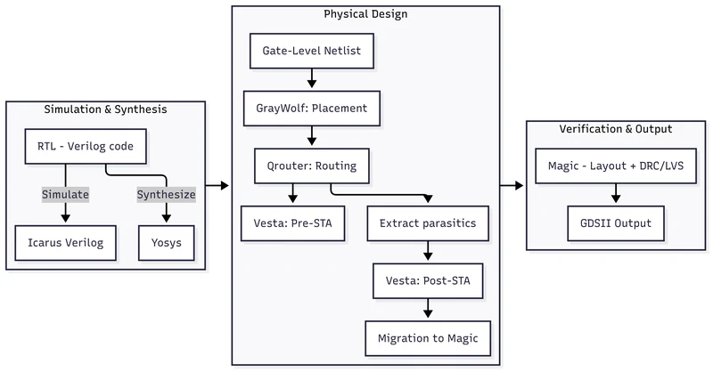
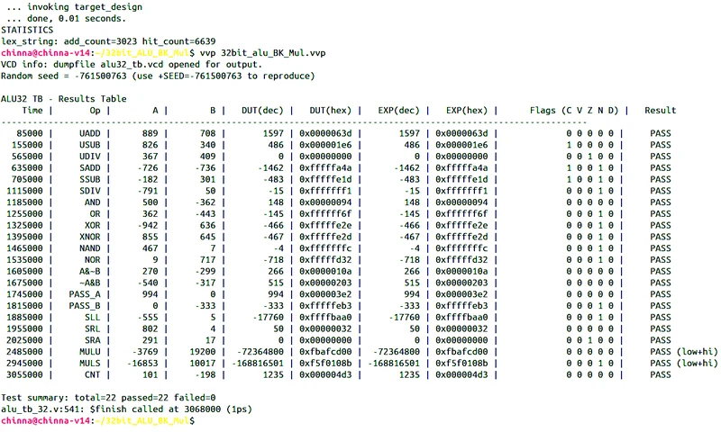
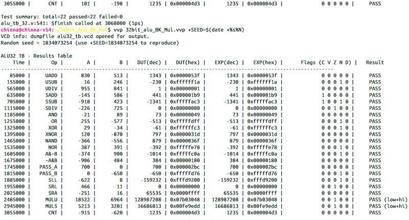
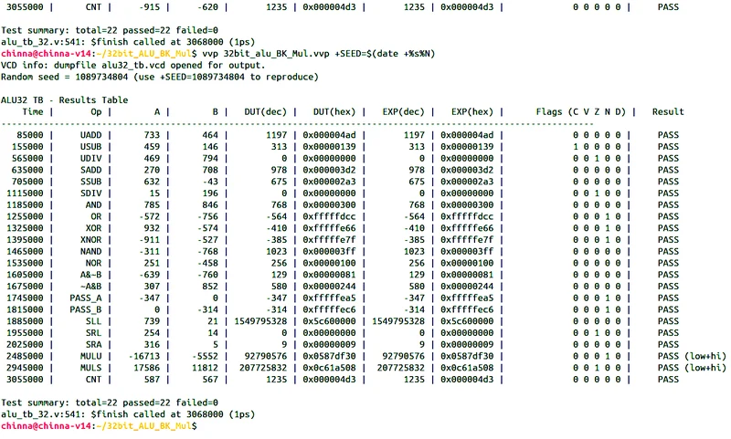
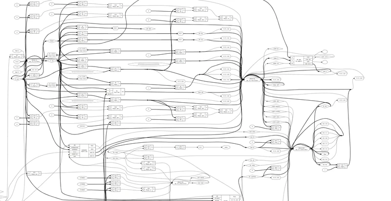
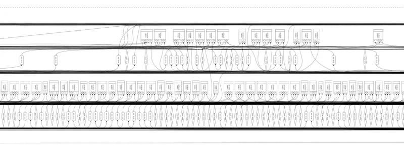
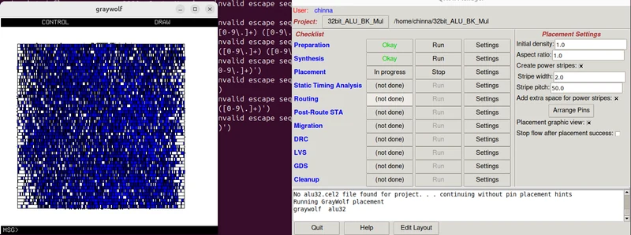
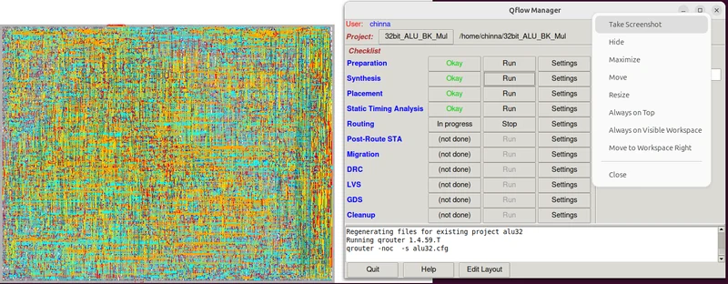
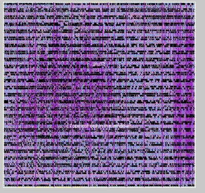
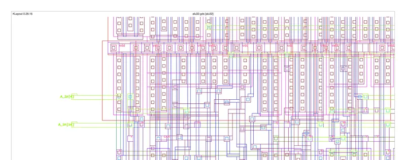
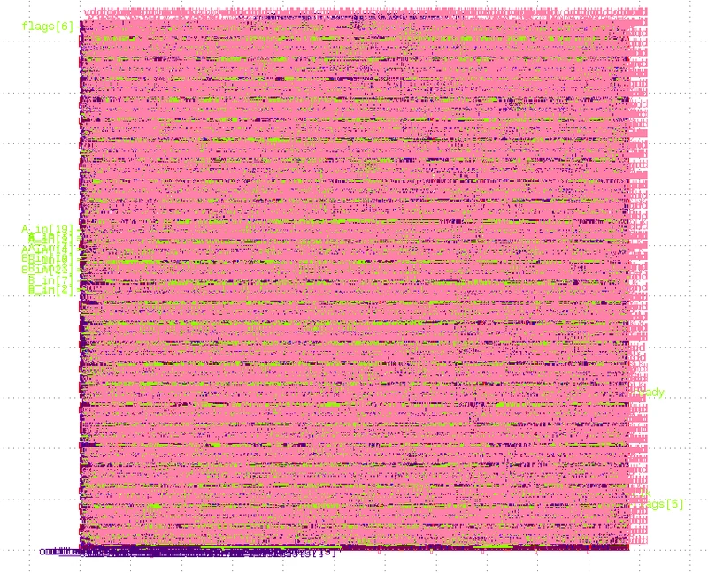